2020 update
To the United Nations Framework Convention on Climate Change and the Paris Agreement
December 2020
The Principality of Monaco is a city-state of 208 hectares, whose economy, diversified, is mainly based on services, construction, tourism and the banking sector.
Since His accession in 2005, HSH Prince Albert II has made the protection of the environment a priority axis of the policy led by his Government, both nationally and internationally.
The Principality of Monaco ratified the United Nations Framework Convention on Climate Change (UNFCCC) on November 20, 1992 and the Kyoto Protocol on February 27, 2006.
Listed in Annex 1 of the Convention with a reduction commitment of 8% compared to 1990 within the framework of the first period of the Kyoto Protocol, the Principality has fulfilled its obligations by reducing its emissions by 13.18% compared to to 1990 1 .
Monaco continued its commitment by accepting the Doha amendments on December 27, 2013. Monaco's objective for the second period of the Kyoto Protocol is an average 22% reduction in emissions over the period 2013-2020.
As part of its first Nationally Determined Contribution, the Principality of Monaco has set itself the goal of reducing its greenhouse gas emissions by 50% by 2030.
HSH the Sovereign Prince is also committed to ensuring that Monaco will achieve carbon neutrality in 2050.
Aware of the eminently collective nature of the issue of reducing emissions, the Principality of Monaco wishes to make its full contribution to the common effort. It expresses the wish that the commitment of all the Parties will make it possible to achieve the objective of containing the average rise in global temperatures to less than two degrees compared to pre-industrial levels and, to the extent possible, to less than 1, 5 ° C.
The Principality of Monaco is a coastal state of the Mediterranean Sea enclosed in French territory along the Côte d'Azur, halfway between Nice and the Italian border. The Principality's territory borders on four French municipalities in the Department of the Alpes Maritimes (Cap d'Ail, La Turbie, Beausoleil and Roquebrune-Cap-Martin) and has a frontage on the Mediterranean.
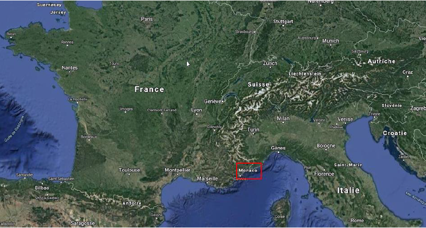
The geographical coordinates of the Principality (at the level of the Oceanographic Museum) are 43 ° 43'49''N and 7 ° 25'36''E.
The territory is in the form of a narrow coastal strip and located at the foot of a watershed of 7 km² and surrounded by a cirque of high reliefs. Its surface area is 208 hectares, of which nearly 40 have been reclaimed from the sea over the past 50 years.
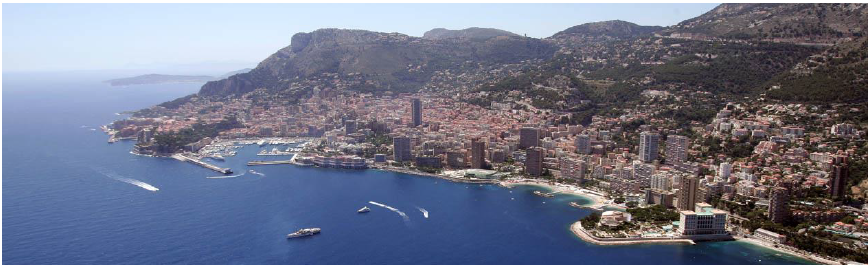
Its territorial waters form a strip which extends over a length of 12 nautical miles towards the open sea and whose width corresponds to the coastal strip of the Principality (approximately 3 km).
The area of territorial waters is about 71 km 2 , which is much larger than the land area of the country.
The Principality is the second smallest independent state in the world, after the Vatican.
The Principality of Monaco is established on a narrow coastal strip. Thus the constructions are all at a very limited distance from the sea (less than 800 m). This situation, associated with the significant sea depths available near the coast, has contributed to the significant development of seawater heat pumps. The first installation was carried out in 1963 and this technology is today the primary source of energy production. local.
Aerial photography of Monegasque territory - Department of Foresight, Urbanism and Mobility
Monaco is located in the north of the western Mediterranean and enjoys a temperate climate, which is characterized by hot, dry summers and mild, wet winters.
The territory is at the interface of a vast adret bathed by the sea and dominated by mountains facing south; temperatures are under the direct influence of the sea.
The average temperature is 16.5 ° C (normal 1986-2005) and a seasonal amplitude less than 15 ° C. The annual rainfall is on average 714.6 mm with a distribution characteristic of the Mediterranean climate with the highest rainfall in autumn and spring.
All of the data collected on a Mediterranean scale indicates a warming during the 20th century and an acceleration during the last decades.
At the scale of the basin, the annual average temperatures are now 1.5 ° C higher than the levels at the end of the 19th century. Warming accelerated after the 1980s, and is increasing at a rate higher than the global average (Lelieveld et al. 2012; Lionello et al. 2012a; Zittis and Hadjinicolaou 2017; Cramer et al. 2018; Lionello and Scarascia 2018 ; Zittis et al. 2019).
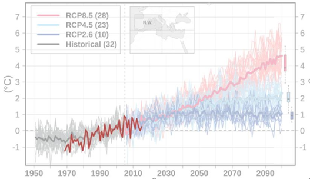
In red - change in annual temperatures in Monaco referenced to Normal 86-05) and in the background - comparison with scenarios RCP2.6 RCP4.5, RCP8.5 2 of the IPCC AR5 report, derived from regional climate modeling for the Northwest Mediterranean area, (NW land only) according to: A multi-model, multi-scenario, and multi-domain analysis of regional climate projections for the Mediterranean - George Zittis1 & Panos Hadjinicolaou1 & Marina Klangidou1 & Yiannis Proestos1 & Jos Lelieveld1,2 . (Fig3)
The temperatures observed in Monaco since the beginning of the year 1970 corroborate these observations and show a regular rise of 0.3 ° C per decade. This rise is more sensitive to minimum temperatures (+ 0.4 ° C) than to maximums. In addition, the hottest years were all observed after 2000.
Ten-year averages of temperatures in Monaco from 1971 to 2019 - Department of the Environment

Increase in the ten-year average of temperatures observed in Monaco from 1971 to 2019. In relation to the normal value 1986-2005.
With its maritime character and its coastline, the Principality of Monaco is directly exposed to a rise, due to global warming, in the level of the Mediterranean Sea. The height of marine water has been measured there since 1999 by a digital coastal tide gauge operated by the Department of the Environment in collaboration with the Hydrographic and Oceanographic Service of the French Navy (SHOM).
Projected sea level rise in Monaco (in meters) - Department of the Environment

Projection of the rise in sea level in Monaco until 2100 according to the IPPC SROCC methodology - Projected rise in global mean sea level. Projections are made for three concentration pathways (RCP 3 ).
On the northern side of the western Mediterranean, an increase of 1 to 2 mm / year was observed between 1970 and 2004. The Ocean and Climate Platform Report indicates that the rise in sea level has accelerated by 3, 6mm per year from the 1990s, against 1.4mm per year previously.
The recordings made in Monaco confirm this trend, the measured elevation has been around 3.5mm per decade since 2000. Despite an increase which slowed down over the decade 2010-2020, current water levels are on the trend predicted by the IPCC increase scenarios.
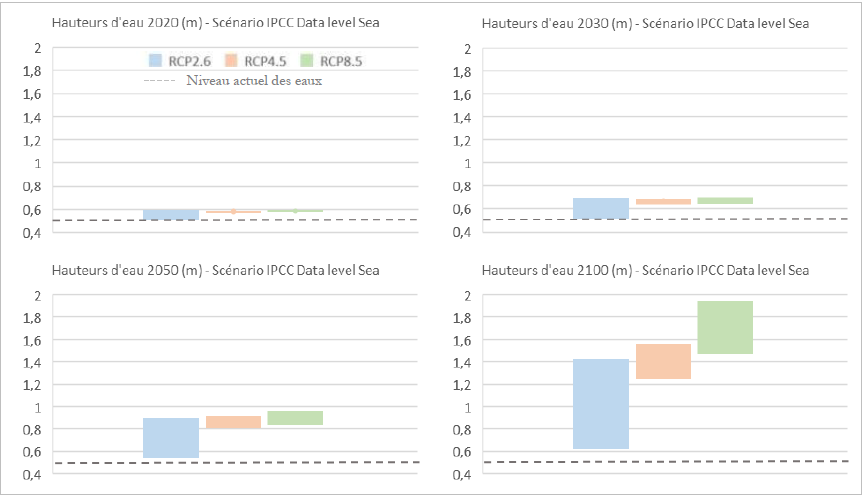
Projection of the rise in sea level in Monaco until 2100 according to the IPPC SROCC methodology - Projected rise in global mean sea level. Projections are made for three pathways of concentration (RCP) and compared to current levels.
According to projections, the average sea level in the Mediterranean would be at the end of the 21 th century in the range 20 to 110 cm higher than at the end of the 20 th century (Special Report on Ocean and Cryosphere - Oppenheimer and SROCC al. 2019, Le Cozannet et al. 2019; Thiéblemont et al. 2019) depending on the level of emissions, with local deviations of up to +10 cm (Carillo et al. 2012; Adloff et al. 2015, 2018) compared to the average of the basin.
The Monegasque population (resident and non-resident) is 9,486 people (December 31, 2019).
The resident population of Monaco, as of June 2016, was 37,308 inhabitants. It is estimated on December 31, 2019 at 38,100 inhabitants. The population is cosmopolitan, there are around 120 different nationalities, including 8,675 nationals (Monegasques).
The largest community is that of the French representing 24.8% of the population, followed by the Italians with a little over 21.9% and the British with a little over 7.5%.
The Principality is a center of economic expansion that has grown rapidly over the past ten years. It constitutes an important employment pool for the French and Italian border regions.
Monegasque GDP for the year 2018 amounted to 6.087 billion euros, an increase of 6.1% compared to 2017.
After the decline observed in 2009, the GDP continued to grow even if it tended to weaken in 2015.

The situation of the Principality of Monaco is atypical as regards on the one hand its resident population and on the other hand its salaried population. In fact, for 38,100 residents, there are nearly 58,000 employees, 87.8% of whom are domiciled outside Monaco. This very singular situation makes comparisons difficult and inappropriate use of certain traditional international indicators. This is particularly the case with the classic indicator of GDP per capita.
In order to situate the Principality in its environment and in its international context, two types of GDP per individual are calculated: on the one hand, it is a “per capita” GDP, calculated since 2005 and on the other hand, of a GDP per employee calculated since 2010.
GDP per capita is more specifically intended for international comparisons. The population used for its calculation is the sum of residents and non-resident employees of Monaco. It was 85,876 individuals in 2018 The GDP per capita, amounted, in 2015, to 68,858 euros in current value.
This value can be compared to that of northern European countries, reflecting a high standard of living of the population.
GDP per employee, for its part, is an indicator for comparing the productivity levels of countries. It amounts to 108,112 euros in 2018.
More than half of Monaco's GDP (53.4%) is produced by 4 sectors:
The activity of the Principality is relatively homogeneous. The following eight sectors weigh between 3.4% and 9.3%. We find among them wholesale trade, accommodation and food services, retail trade.
The Principality of Monaco is a net importer of energy. No production is sold outside.
The total final energy consumption in 2018 was around 1073 GWh.
Breakdown of total final energy consumption in 2018 - Department of the Environment
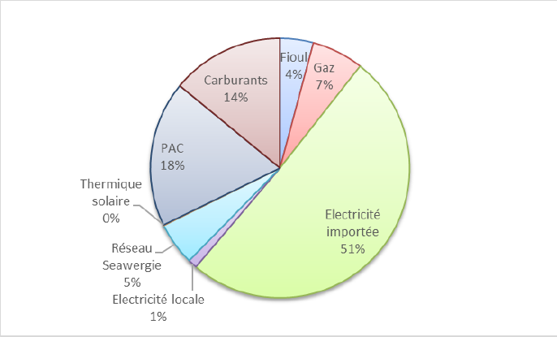
Half of the total energy consumed in Monaco is attributable to electricity used for private and public uses, mainly homes, commercial and industrial facilities, public buildings and equipment (hospitals, schools, etc.), as well as urban lighting.
The consumption of fuels for transport is the second largest item of energy expenditure (14%). This is the sale of gasoline and diesel in the territory.
Then come the expenses for heating and cooling with heat pumps, the consumption of domestic fuel oil and natural gas.
The energy produced in Monaco comes mainly from heat pumps and the waste-to-energy plant. Although accessory, the production of photovoltaic electricity is increasing strongly.
In 2018, 24.3% of Monaco's total final energy consumption was covered by renewable local production.
Share of local energy production in relation to total consumption - Department of the Environment
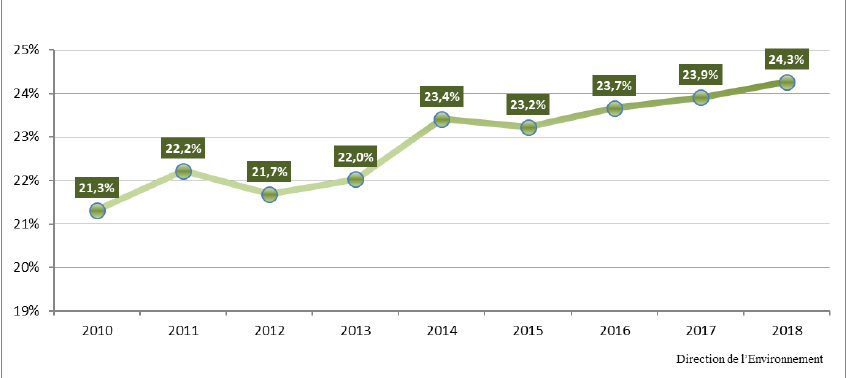
In order to assess the effect of policies and measures in terms of reducing energy consumption in the Principality, two indicators are monitored: energy intensity and energy consumption per capita.
The amount of energy consumed by the resident population has declined steadily since 2007, reaching a decrease by 12.5% in 2018.
Energy indicators between 2007 and 2018 (base 100 = 2007) - Department of the Environment
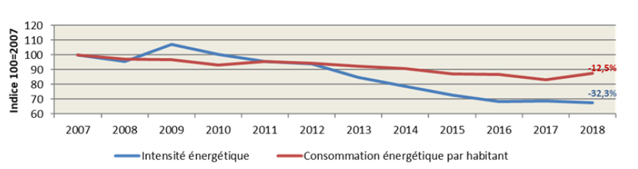
As explained in chapter 1.5 Economy, the proportion of commuting employees is extremely high. Also, a reference population has been calculated since 2013.
If we compare the indicator of energy consumption per capita and per capita, the observed decrease is greater for the latter. Economic activity has a constant tendency towards electro-efficiency.
Energy indicators between 2013 and 2018 (base 100 = 2013) - Department of the Environment
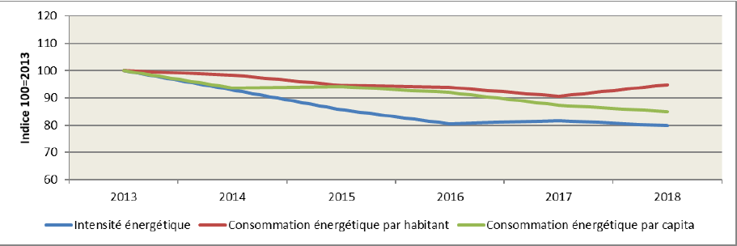
The end of the 90s and the beginning of the 2000s were marked by a succession of positive thermal anomalies, which caused massive mortalities with local population extinctions, or even proliferation of harmful species (dinophytes and filamentous algae) .
Since 2003, the Principality has been continuously monitoring the temperature of the water column and is a pioneer in this area.
Annual average temperatures in the water column between 2006 and 2018 - Department of the Environment

Daily temperature measurements on the water column between 2014 and 2018 - Department of the Environment

Disappearances of thermosensitive species have already been observed, following abnormal thermal episodes. The gorgonians present on the fall of Spélugues (-9m to -37m) were strongly impacted, the majority of purple gorgonians died. The disappearance of these gorgonians, a filter species, has had a strong impact on the species living nearby. Today we find the species under 45m depth.
The abnormal temperature episodes of the water masses also led to a notable quantitative decrease in Monegasque red coral. Laboratory studies carried out by the Scientific Center of Monaco show that this thermosensitive species is also impacted by ocean acidification. This thermal modification results from other impacts which lead to the modification of the physico-chemical parameters of water masses.
Thus, the modification of the environment induces either the disappearance of certain species, or the establishment and naturalization of others, or migrations ... Although the Mediterranean is, at the level of plankton, not very productive, the impacts of these thermal evolutions are also unknown on these living beings and their effects will have to be studied.
At the end of 2018, all populations of large mother-of-pearl on the Monegasque coast were impacted by the epizootic raging on the Mediterranean coasts, and none of the mother-of-pearl present resisted these massive mortalities.
Faced with this observation, the Monegasque State wished to develop an experimental program aimed at trying to reconstitute the missing populations. This program is based on the installation of traps allowing the capture of larvae of large nacres. Once these larvae are captured, they will be removed from the natural environment and reared in an aquarium until they reach a stage allowing their reintroduction into the environment. A first attempt to capture these larvae has been scheduled for summer 2019 and will continue in 2020.
At the terrestrial level, the inventory of the native terrestrial vascular flora of the Principality of Monaco allowed the identification of 347 taxa (species and subspecies) currently present, divided into 79 plant families. However, at least 49 taxa formerly mentioned by botanists could not be found and they can be considered today as extinct from the territory.
The presence of certain invasive species has increased in recent years, notably with the presence of the Aedes albopictus mosquito and the algae Ostreopsis ovata .
The Principality of Monaco is highly exposed to the appearance of the Aedes albopictus mosquito . The exotic plants present in the Principality, such as the Balisier, are favorable to its development. These mosquitoes appear earlier in the year and disappear later. Their diapause is therefore shorter and shorter. At the same time, there is a decrease in the presence of Culex-type mosquitoes, in competition with “tiger” mosquitoes. The European Center for Disease Prevention and Control (ECDC) observed for the first time, in 2006, the presence of the Aedes albopictus mosquito , in Monegasque territory.
This mosquito is one of the 100 most invasive species in the world. Chikungunya is now considered a “re-emerging” disease. Climate projections in Monegasque territory show an increase in the number of months when conditions would be favorable for the transmission of the virus, i.e. 4 to 5 months in the Principality.
Since 2007, a monitoring system and preventive management of the risk associated with the presence of the algae Ostreopsis ovata have been put in place. The appearance of the algae was noted in the Mediterranean, however, the risk thresholds for public health have never been reached in the Principality.
Observation of jellyfish on the coast, in particular Pelagia noctiluca , has increased since the 90s. The apparent increase in their number, which remains to be confirmed, however, is linked to a combination of several factors favoring their proliferation: increased water temperature, strength and direction of currents, as well as overfishing of fish predators of jellyfish and other planktonic species.
For coastal jellyfish, Aurelia aurita , the general increase in temperatures would tend to promote this proliferation by extending their reproduction period. Finally, plastic could serve as a feeder for them. According to the Oceanological Observatory of Villefranche-sur-Mer (France), approximately one in 200,000 people will develop hypersensitivity and an immediate allergic reaction which can lead to anaphylactic shock.
In addition, certain species of exotic fish are now found in Monegasque waters, such as the flutefish ( Fistularia commersonii ). Native to the Indian and Pacific Oceans, this fish was first reported in the Mediterranean off the Israeli coast in 2000. The pipefish is a species associated with rocky reefs of minor importance to commercial fishing. It is one of the species that colonized the Mediterranean the fastest. It was observed in 2010 in Monegasque waters. However, even if individuals, mostly adults, have arrived, none have settled down.
Even if no exotic species of fish has yet settled permanently in Monegasque waters, it is certain that the arrivals of Lessepsian fish will continue and probably will intensify in the western Mediterranean in the years to come.
Monaco 4's overall greenhouse gas emissions fell from 102.74 kt 5 CO2equivalent in 1990 (base year for CO2, CH4 and N2O and 1995 for fluorinated compounds, LULUCF excluded ) to 86.93 kt CO2eq 6 in 2018.
This change in emissions represents a reduction of 15.4%.
Over this period, we first note an increase in emissions from 1990 to 2000. The maximum was reached in 1996 with emissions of 109.91 kt CO2eq. Then, from 2000, the trend is generally decreasing until 2018, despite some rebounds.
The agricultural sector does not exist in Monaco. There is no agricultural activity or cattle breeding.
Evolution of global GHG emissions from 1990 to 2018 - Department of the Environment

2.1.2 Evolution of emissions by major activity sector between 1990 and 2018 - Department of the Environment
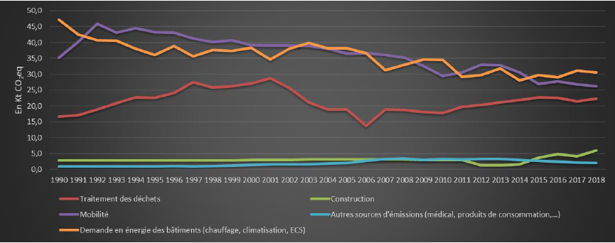
This graph shows the evolution of greenhouse gas emissions by major activity sectors as detailed below:
Energy demand from buildings: includes emissions linked to the combustion of domestic fuel oil and natural gas for heating and domestic hot water, heavy fuel oil and natural gas via the SeaWergie network, gas from stationary air conditioning systems, gas electrical transformers and losses from the natural gas network.
Emissions from this sector decreased by 35% between 1990 and 2018.
Waste treatment: includes emissions related to waste incineration at the UIRUI
Emissions from this sector increased by 34% between 1990 and 2018.
Mobility: includes emissions relating to road fuels, fuels for domestic navigation and national aviation, automotive air conditioning gases and automotive lubricants and additives
Emissions from this sector decreased by 26% between 1990 and 2018.
Construction: includes emissions relating to off-road diesel, paints, foams, bitumens and wood treatments.
Emissions from this sector increased 107% between 1990 and 2018.
Other: includes emissions related to gas from refrigerators, gas from medical inhalers and particle accelerators, dry cleaners, pressurized containers such as whipped cream, glues, paraffin and printing inks.
Emissions from this sector increased by 115% between 1990 and 2018.
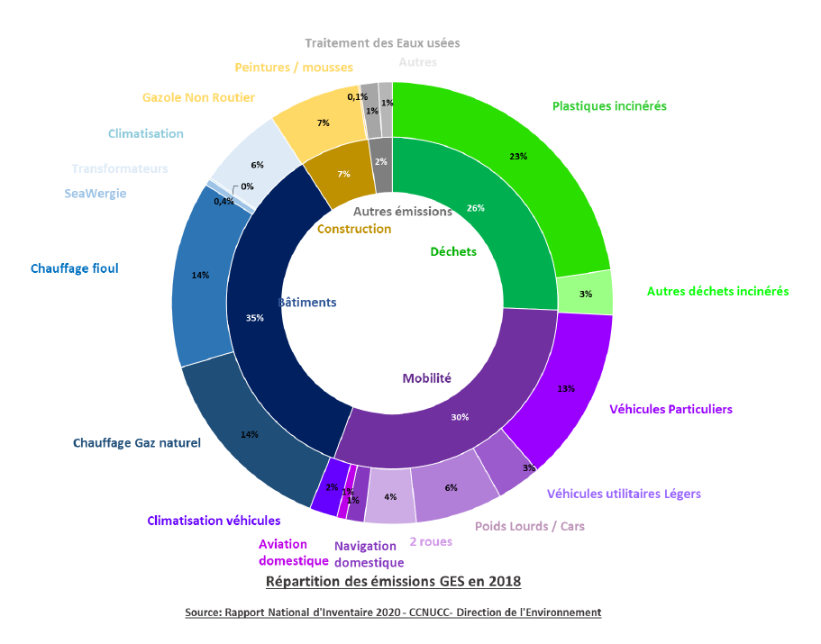
The above graph shows the repair of greenhouse gas emissions in 2018 by major activity sector (inside) and by sub-category (outside).
Emissions from the Energy sector fell from 101.65 kt CO2eq in 1990 to 77.49 kt CO2eq in 2018, i.e. an increase of -23.76%.
Evolution of GHG emissions from the Energy sector from 1990 to 2018
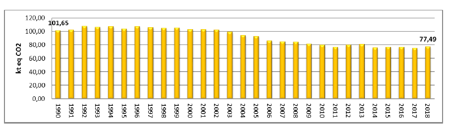
Emissions from the Industry sector (excluding transport) fell from 0.38 kt CO2eq in 1990 to 8.289 kt CO2eq in 2018, i.e. an increase of 2060%.
Evolution of GHG emissions from the Industry sector from 1990 to 2018

Emissions from the Land Use, Land Use Change and Forestry sector fell from 0.00 kt CO2eq in 1990 to -0.02 kt CO2eq in 2018, an increase of -1286%.
Evolution of GHG emissions from the LULUCF sector from 1990 to 2018

Emissions from the waste sector fell from 0.71 kt CO2eq in 1990 to 1.15 kt CO2eq in 2018, i.e. an increase of 63%.
Evolution of GHG emissions from the Waste sector from 1990 to 2018
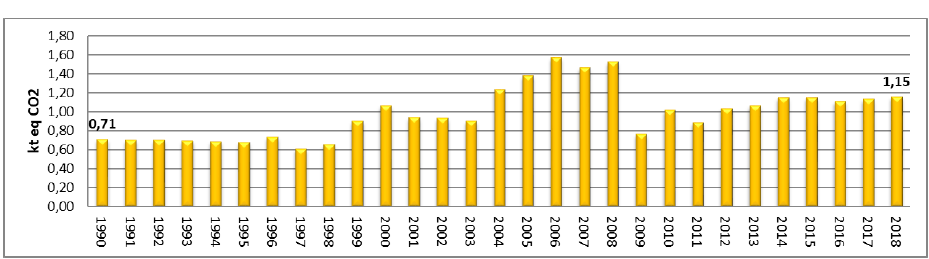
Emissions from the Soultes Internationales sector rose from 6.70 kt CO2eq in 1990 to 12.61 kt CO2eq in 2018, i.e. an increase of 88%.
Evolution of GHG emissions from the Soultes Internationales sector from 1990 to 2018
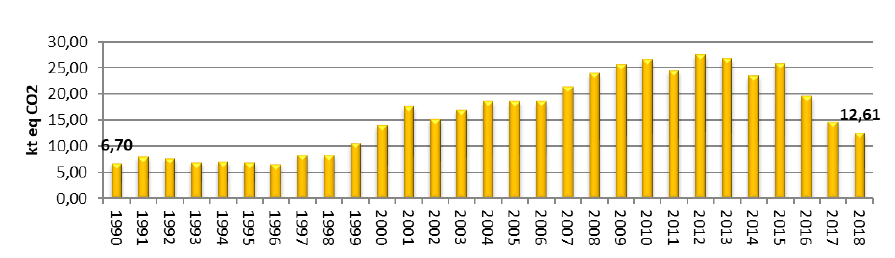
Carbon dioxide is the main greenhouse gas emitted in the Principality. In 2011, the values and percentages of emissions of the various greenhouse gases were as follows (LULUCF excluded):
Carbon dioxide CO 2 - The main gas emitted in 2018 remains CO 2, which represents 86% of global emissions. Between 1990 and 2018, CO2emissions fell from 98.23 kt to 74.76 kt.
Methane CH4 - CH emissions 4 increased from 0.09 1990 to 0.05 kt kt in 2018.
Nitrogen oxide N2O - Emissions of N2O increased from 0.007 kt kt 1990 to 0.01 2018.
HFCs and PFCs - HFC-PFC emissions fell from 0.0 kt CO2eq in 1990 (0.29 kt CO2eq in 1995) to 7.61 kt CO2eq in 2018.
SF 6 - SF6 emissions fell from 3.6 E-6 kt in 1990 (4.1 E-6 kt in 1995) to 5.4 E-6 kt in 2018.

Evolution of GHG emissions by gas between 1990 and 2018
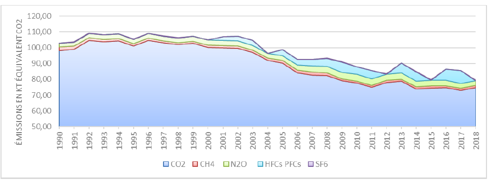
The Principality of Monaco has set itself the objective, within the framework of this Nationally Determined Contribution, of reducing its greenhouse gas emissions by 55% by 2030.
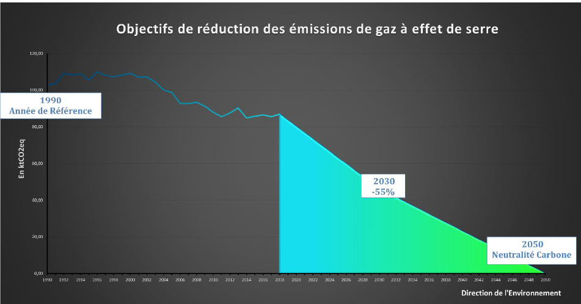
To achieve its objectives for 2030, the Principality of Monaco has already implemented important policies and measures. These policies also aim to place the territory in a trend of reducing greenhouse gas emissions in order to achieve carbon neutrality by 2050.
Thus, the Principality is implementing policies and measures covering the three main sectors of energy, transport and waste detailed in the Plan Climat Air Energie 2030. These policies and measures are organizational, technical, regulatory or incentive. .
The main actions are detailed below:
The consumption of fossil fuels in buildings is one of the main sources of greenhouse gas emissions.
The priority areas developed by the Principality in this sector aim to decarbonize the energy consumed by buildings and improve their energy efficiency.
The decarbonisation of fossil fuels results in an increase in the proportion of renewable or recovered energy consumed, notably via the creation of thalassothermal networks, the recovery of fatal energies, as well as via the increase in solar thermal and photovoltaic production on the territory and abroad (in proportion to the electricity consumed in the territory).
In addition, it will take the form of an increase in the biogenic share in fossil fuels, or even the substitution of these fuels by new fuels that are 100% of biogenic origin.
Improving the energy and environmental performance of all existing and future buildings is also essential. The best energy is the energy that is not consumed.
The policies and measures simultaneously target the renovation of already built heritage (envelopes and energy systems), uses and changes in behavior and sustainable construction methods for new buildings (adapted to the Mediterranean climate and the specificities of Monaco) with the aim of high optimization of the energy efficiency of all buildings.
This optimization requires a gradual strengthening of the regulatory thermal requirements for new buildings and renovations, as well as prioritization and an increase in the annual renovation rate, supported by financial measures.
In addition, the Government supports the adaptation of construction methods to specific local climatic conditions through Monaco's Mediterranean Sustainable Building approach and the training of construction stakeholders in new techniques and technologies.
It should be noted that the Principality of Monaco takes a strong interest in “blue energy” and in particular in thalassothermy in order to replace fossil fuels. With its coastal frontage and significant bathymetry near the coast, this technology is particularly suited to the territory. The studies carried out have also demonstrated a zero environmental impact of water discharge on biodiversity.
Transport policies and measures mainly concern road transport. Monaco also has a helipad and two marinas. Monaco is an important center of activity adjacent to the French department of Alpes-Maritimes. This economic dynamism generates significant exchanges of assets (commuting with France and Italy), as well as traffic induced by economic activity (external company, deliveries, etc.).
Monaco's service center (hotels, sports facilities, education, etc.) leads to a high number of day visitors (local visitors).
Thus, the Principality is pursuing two lines of action in terms of reducing greenhouse gas emissions from road transport, namely reducing traffic and decarbonizing means of transport.
The priority for action lies in the absolute reduction of kilometers traveled by individual motorized transport, to the benefit of active modes and public transport.
The structuring actions will consist in particular in the creation of relay car parks at the borders and in the multiplicity of alternative mobility solutions (cable cars, support for walking and cycling by strengthening the equipment and e-service offers) .
Public transport will be gradually replaced to reach 0 CO2emissions by 2030.
In addition, the Government supports the substitution of thermal vehicles by electric vehicles. While it improves the situation in terms of direct CO2emissions and atmospheric pollutants, this substitution does not resolve the problems of congestion on travel axes (which primarily condition the possibilities for developing alternative modes) and is difficult to generalize. (very high consumption and electrical power, risk of fire in collective car parks, etc.)
In the context of air transport, efforts are being made to limit the fuel consumption of aircraft. The Monaco heliport is pursuing an Airport Carbon Accreditation certification process. Electric helicopters could be put into service by 2030 to provide regular Monaco - Nice (France) lines.
Finally, with regard to navigation, the Principality has banned the use of heavy fuel oil in its territorial waters and is deploying devices for supplying electricity to ships in ports. Discussions are being carried out on the use of hydrogen by ships.
These policies will be supported by a gradual decarbonisation of fuels in line with European policies in this area.
Since 2016, the Principality has been deploying an ambitious strategy to limit the quantity of waste produced and to orient waste as a priority towards material recovery.
This strategy was complemented by a “zero single-use plastic waste by 2030” policy.
In terms of reducing greenhouse gas emissions, Monaco's priority in this area relates to the reduction of plastic waste, the incineration of which is responsible for the majority of emissions in this sector.
This must nevertheless be part of a comprehensive and long-term policy which aims both to reduce all types of waste at source and to improve their recovery - primarily materials, energy. secondly - with a view to reducing energy, climate and environmental impacts.
These policies and measures take the form of regulatory measures aimed at banning the marketing or distribution of certain products, measures aimed at simplifying sorting and increasing the quantities collected.
The Principality does not have heavy industry on its territory and the industrial sector is very weak. Greenhouse gas emissions reported in the Industry sector mainly concern craft activities.
The policies and measures are mainly aimed at general measures related to energy, pollutant emissions and fluorinated gases.
With regard to fluorinated gases, the Principality intends to severely limit the global warming power of fluorinated gases used in its territory.
It should be noted that in this area the Principality of Monaco benefits from the regulatory changes of the European Union on products, due to the customs union between the two territories.
While the Principality is committed to ambitious energy and climate objectives, the Prince's Government cannot achieve them alone. It must be shared with the inhabitants and the public and private actors who animate, work and visit the Principality.
The drive towards carbon neutrality in 2050 requires profound changes, in particular in the energy, buildings and transport sectors, but above all in the habits and choices of each individual.
These transformations are the source of many positive impacts (living environment, jobs, innovation, etc.) but they must be shared and require a commitment from all.
The cross-cutting policies and measures concern both mobilization and awareness-raising actions for local actors, and support actions.
As such, Framework Law No. 1.456 of December 12, 2017 on the Environmental Code constitutes the legal basis for the implementation of regulatory actions and financial support.
The Government intends to continue and amplify support efforts to guide and amplify the passage to action. But this set of measures offered by the Government can only bear its effects if there is a collective awareness of the issues, a good appropriation of the objectives and solutions, and above all a federative dynamic around the desire to contribute and to succeed together.
Thus, various means are developed through sectoral approaches such as “Committed Commerce” or “Engaged Restaurant”, or more global by bringing together all the players such as the “National Pact for the Energy Transition”.
These approaches constitute forums for discussion and learning on the actions of each individual, as well as a space conducive to awareness and mobilization.
The diagnosis of vulnerability to climate change for Monaco must be understood through the direct effects of climate change; increase in hot periods, change in bioclimatic characteristics, energy stress and rise in sea level.
The urban climate is generally characterized by a higher temperature than in the surrounding rural areas (especially at the end of the day and at night), specific winds and the presence of urban pollution.
The difference in temperature observed in urban heat islands (ICUs) is linked to the heat stored during the day in the mineral town and released at night, which will thus prevent the cooling of the air in the city at night. More marked at night, this difference is characterized by air temperatures (at different heights) and surface temperatures (temperatures of specific urban materials, and is thus strongly correlated with the variation in urban density, in particular building materials.
A study launched in 2020 made it possible to identify urban heat islands (ICUs) and cooler areas, in order to be able to assess the vulnerability of the territory and areas with high stakes.
The objective will then be to take into account summer comfort in construction and rehabilitation work and during the operation of buildings, but also in land use planning work. Once finalized, this study will serve as a management tool for tree species present in the Principality, with the aim of promoting species having a role in thermal regulation, but also in the capture of various atmospheric pollutants in correlation with air quality data.
This issue can be felt at two levels: at the building level (internal thermal discomfort) and at the district level (urban heat islands). In the Principality, the issue of thermal discomfort in buildings is not predominant. Conversely, the increase in temperatures should strongly impact the ICU phenomenon.
Strengthening the role of nature is a priority for the Principality in order to improve the living environment and adapt the territory to climate change.
In the context of a dense urban environment, environments favorable to biodiversity are rare and must therefore be both preserved and developed. Today it is a question of proposing a new urban model for
Monaco where nature unfolds wherever possible, in the heart of public space as well as in buildings.
The Prince's Government, through the National Strategy for Biodiversity to 2030, aims to place biodiversity at the service of the living environment and climate policy of the Principality of Monaco.
Monaco being the most densely populated coastal city in the world, climate change will put additional pressure on the populations and the biodiversity of the territory. It is therefore necessary to prepare the resilient city of tomorrow by integrating the services provided by nature.
These services concern attractiveness, improvement of the environment and quality of life for residents, the social need for connection to nature, reduction of vulnerability to natural risks and adaptation of the Monegasque territory to climate change.
With the ambition to make biodiversity a key component of the quality of life in Monaco, a plan to “renaturate” the city has been initiated. Road surfaces represent around 30% of the surface area of Monegasque territory. These surfaces are all opportunities for integration and development of biodiversity. An objective of renaturing at least 20% of these areas has been set for 2030, i.e. a gain of more than 13 ha of areas favorable to biodiversity.
Finally, this renaturation of the space will improve connectivity between natural spaces, which will benefit the development of biodiversity and contribute to improving the well-being of the Principality's inhabitants and reducing the temperature.
The place of trees in the city wants to be strengthened with a major planting program. An increase of at least 20% in the number of individuals, which represents the planting of 2,400 additional trees in the territory, is envisaged by 2030, in addition to the 12,000 trees already present in the territory. In addition, the development of green infrastructure on buildings, such as intensive roofs and modular green walls, will be encouraged to “savage” the city with the aim of bringing together a high number of plant species (sown, planted, but also spontaneous), different strata (shrub, herbaceous, musky) adapted to local climatic and microclimatic conditions (temperature, humidity, light, wind).
In the medium term, climate change will lead to a modification of the wind regime, which is the source of the waves, and an increase in the mean sea level. The Monegasque coast will be subject to these changes.
A study was carried out in the Principality to define the coastal areas most exposed to the risk of submersion, as well as a mapping to identify the risks of submersion on the entire Monegasque coast for the current state and on the horizon. 2100.
As the Principality is largely built on the sea, the risk of submersion is high.
Thus, improvements and structures must be carried out in the future, with:
Faithful to its tradition of solidarity, the Principality of Monaco fully intends to shoulder its share of responsibility in the collective fight against climate change. In this sense, Monaco will maintain its support for developing countries and their efforts to mitigate and adapt to climate change.
The Prince's Government's international climate finance growth strategy provides for a biennial increase of 100,000 euros from 2020, by 2030.
A transversal approach, linking several sustainable development objectives will remain privileged, in particular activities with climate / biodiversity / ocean co-benefits, because these issues cannot be addressed separately.
As in the past, the Principality will continue to focus its efforts on the Least Developed Countries and Small Island Developing States, which are among the first victims of climate change.
The majority of the Principality's international climate finance is channeled through bilateral channels, in particular through the Green Climate Fund, which Monaco has supported since the start of its operations in 2015.
On the occasion of the Fund's first reconstruction, in 2019, the Prince's Government pledged to contribute € 3.75 million over the period 2020-2023, thus strengthening the Principality's position as an important donor per capita. Through this contribution, Monaco guarantees the equitable allocation of its climate financial resources between adaptation and mitigation, while ensuring that these reach the developing country Parties.
Monaco also pays particular attention to how climate change affects human health and threatens the fundamental right of individuals to live in a healthy, clean and sustainable environment. In order to remedy this, the Prince's Government is channeling part of its international funding to organizations that work to combat the harmful effects of climate change, including the WHO, through its strategic priority B3, and the Climate and Clean Air Coalition. .
Finally, in addition to its traditional climate financing, the Prince's Government carries out numerous international cooperation programs which, without being dedicated to it, present “climate co-benefits” for the Principality's partner countries both in terms of adaptation and mitigation. For the year 2021, these projects represented a total of almost 4.8 million euros, an increase of around 87% compared to 2018.
In the future, Monaco plans to further strengthen the integration of climate considerations at the heart of its development cooperation policy, in order to make all of this funding more consistent with low-carbon and resilient development in its partner countries. The medium-term objective is to be able to take advantage of fully “climate compatible” cooperation.
The Principality has delivered all of its funding in the form of donations and intends to continue in this way. Multilateral, regional and bilateral channels will continue to be used depending on their capacity to deliver concrete results on the ground.
The reduction of the territory's greenhouse gas emissions is primarily the effect of national measures.
In the event that these reductions do not make it possible to achieve the objectives set, the Principality may have recourse to the market mechanisms referred to in Article 6 of the Paris Agreement.
6.1 Quantifiable information about the reference point
Monaco considers 1990 as the reference year for its commitments.
The Principality of Monaco is committed to reduce its emissions by 55% by 2030. The implementation period is from 1 st January 2021 to 31 December 2030.
Monaco's commitment covers all territorial emissions, as reported in the National Inventory Reports.
It concerns all sectors: Energy, Industrial Processes and Product Use, Agriculture, Forests and land use and waste.
Finally, it covers all gases: carbon dioxide (CO2), methane (CH4 ), nitrous oxide
(N2O), fluorinated gases hydrofluorocarbons (HFC) and perclofluorocarbons (PFC), sulfur hexafluoride (SF 6 ) and nitrogen trifluoride (NF 3 ).
The estimate of greenhouse gas emissions for all sectors is carried out in accordance with the 2006 guidelines (GL 2006) of the Intergovernmental Panel on Climate Change (IPCC). The global warming powers used are those published in the 4th Assessment Report on Climate Change from the IPCC (IPCC - AR 4 - 2007). The values may be modified as a result of methodological improvements made to estimate greenhouse gas emissions.
The development of the Nationally Determined Contribution is part of the review of the energy and climate planning of the Principality of Monaco by 2030. In this context, through various bodies, public and private actors have been consulted.
The projections and policies and measures determined were dictated to achieve the 2030 objectives and to put the Principality on the trajectory of carbon neutrality by 2050.
The methodological assumptions and approaches, including those concerning the estimation and accounting of anthropogenic greenhouse gas emissions are those used in the national inventory reports in accordance with the IPCC guidelines.
The monitoring of the implementation of policies and measures will be carried out within the framework of the governance of the Climate Air Energy Plan.
The monitoring of changes in greenhouse gas emissions, energy indicators and the effect of policies and measures will be carried out through the preparation of national inventory reports and other reports required under the Convention and the Paris Agreement.
Monaco's commitment to reduce greenhouse gas emissions has been reviewed and increased as part of this Nationally Determined Contribution.
Thus, the quantified commitment to reduce GHG emissions by 2030 has gone from -50% to -55%.
Monaco considers its commitment particularly ambitious in view of its national situation and in particular its territory of 2km² which corresponds to a dense urban environment.
The policies and measures implemented cover all the sectors at the origin of greenhouse gas emissions. Support policies are implemented to support populations in the transitions necessary to meet the commitments set.
The IPCC 8 has determined the trajectory to limit global warming to 1.5 ° C “ In the trajectories that limit global warming to 1.5 ° C without or with minimal overshoot, net global anthropogenic emissions of CO2 decrease by 'around 45% from 2010 levels through 2030 (interquartile range: 4060%), becoming zero around 2050 ”.
By deciding to reduce its greenhouse gas emissions by 55% in 2030 compared to 1990, the Principality of Monaco has decided to align its commitment by 2030 with this trajectory.
Thus, the Principality of Monaco intends to assume its responsibility to allow ecosystems to adapt naturally to climate change, that food production is not threatened and that economic development can continue in a sustainable manner by setting its reduction objective. of greenhouse gas emissions over the long-term objective as set out in Article 2 of the Convention and specified by Decision 10 / CP.21.
National Inventory Report of the Principality of Monaco, submitted on September 3, 2014: http://unfccc.int/national_reports/annex_i_ghg_inventories/national_inventories_submissions/items/8108.php ↩︎
RCP: Representative Concentration Pathway ↩︎
RCP: Representative Concentration Pathway ↩︎
National Inventory Report 2020 - Department of the Environment - Monaco ↩︎
kt: kilotonne ↩︎
kt CO2eq: kilotonne of carbon dioxide equivalent ↩︎
LULUCF: Land Use, Land Use Change and Forestry. ↩︎
IPCC Special Report on the Consequences of Global Warming of 1.5 ° C Relative to Pre-industrial Levels and Associated Pathways of Global Greenhouse Gas Emissions, Against the Context of Strengthening the Global Response to Climate Change , sustainable development and poverty - Summary for policymakers - paragraph C.1 ↩︎